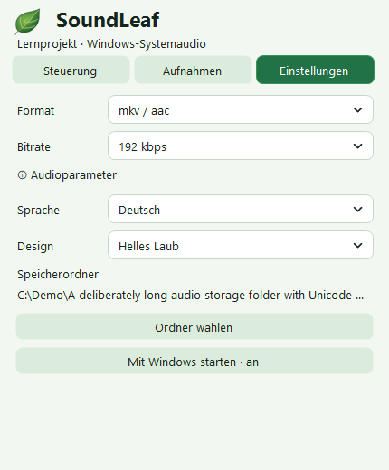
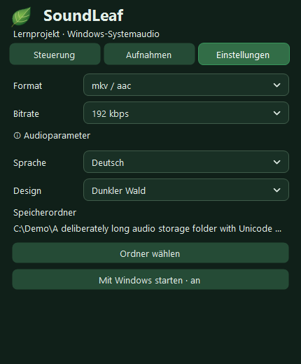
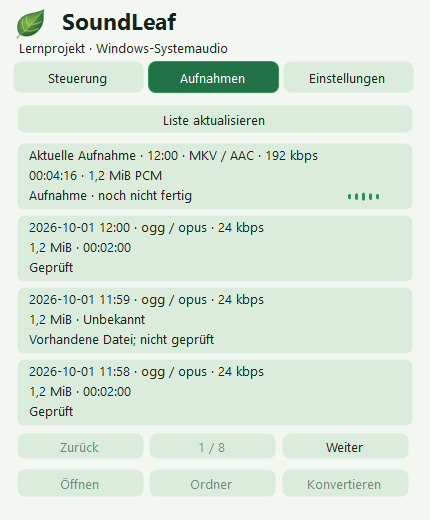

SoundLeaf
Anleitung
Vom ersten Start bis zur gespeicherten Aufnahme. Alle Schritte direkt neben der echten SoundLeaf-Oberfläche.
Mit dem ersten Schritt beginnen

1 · Installation
Windows 11 x64 · .NET Framework 4.8. Offline-Setup oder portables ZIP von der Versionsseite laden. Setup installiert nur für den aktuellen Benutzer ohne Administratorrechte; FFmpeg 9.0.2, passende Quellen und Lizenzen sind enthalten. Kein Internet während der Installation nötig. Setup startet weder App noch Autostart. Portables ZIP vollständig in einen beschreibbaren Ordner entpacken. SHA256SUMS.txt vergleichen. Unsignierte Vorschau: Windows kann vor unbekanntem Herausgeber warnen; Schutz nicht deaktivieren.
2 · Aufnahme
Beim Start beginnt die Aufnahme nach Prüfung von Ordner, freiem Platz und Audio-Profil automatisch. Quelle ist das Standard-Ausgabegerät von Windows, nicht das Mikrofon. Nur erlaubte Inhalte mit notwendiger Zustimmung aufnehmen. Linksklick öffnet die Tray-Oberfläche, Rechtsklick das Menü. Pausenzeiten fehlen im Ergebnis. Escape oder Klick außerhalb versteckt nur die Oberfläche.
Formate und Einstellungen
Standard: mkv / aac, 192 kbit/s mit ursprünglicher Rate und Kanälen. Im gestoppten Zustand ein Ausgabeformat wählen: ogg / opus (anfangs 24 kbit/s, mono, 48 kHz, Sprach-VBR), mp3 (CBR), m4a / aac oder aac / adts. VBR ist ein Zielwert, keine garantierte Dateigröße. Zusätzliche AAC/MP3-Profile verwenden 48 kHz und maximal zwei Kanäle. Speicherordner, Design und Deutsch / Русский / English in Einstellungen wählen. Bestehende Dateien werden nicht verschoben.


3 · Speichern und prüfen
Stoppen und Kodierung, vollständige Dekodierung und Dauerprüfung abwarten. Der drehende Tray-Ring bedeutet Verarbeitung, nicht Fertigstellung. Erst nach Prüfung und atomarer Veröffentlichung ohne Überschreiben gilt das Ergebnis als fertig. WAV-Sicherung erst nach Erfolg entfernen; bei Fehlern bleibt Audio erhalten. Aufnahmen zeigt fertige Dateien und die laufende, noch unfertige Sitzung. In anderem Format speichern erstellt eine geprüfte Kopie, behält das Original und verbessert keine verlorene Qualität.


Wiederherstellung und nur WAV
Bei Encoderfehler erfolgt kein automatischer Formatwechsel. Nur WAV ausdrücklich im Tray wählen. Lange WAV-Aufnahmen bleiben Teile bis 256 MiB, keine unbegrenzte Einzeldatei. Abgeschlossene WAV-Sitzungen werden gesondert markiert. Wiederherstellung nutzt geprüfte WAV-Teile und das gespeicherte Profil; Originale werden erst nach Erfolg archiviert.
4 · Grenzen
Reines Lernprojekt, keine professionelle Aufnahmelösung. Auf einem Windows-Rechner getestet; Bildschirm-/DPI-Matrizen enthalten Simulationen, keine Zusage für alle Displays oder Neuinstallationen. Unter 256 MiB frei wird blockiert, bei wenig/unbekanntem Platz gewarnt. Keine Platzgarantie. Ruhe-Schwelle betrifft nur die Pegelanzeige, niemals aufgenommenes Audio. Nach Gerätewechsel neue Sitzung beginnen. Vor Updates stoppen, warten, beenden und Recordings/State sichern. Deinstallation behält Benutzerdaten; automatische Updates und Migration sind nicht implementiert.
5 · Hilfe
Bei Fehlern das Protokoll im Tray öffnen. Vor dem Teilen Audio, Protokolle und persönliche Pfade prüfen.
Problem melden